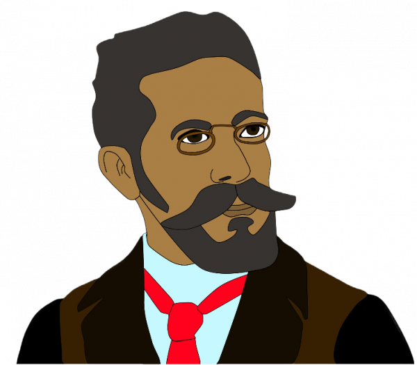
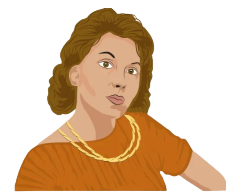
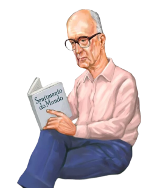

-
Machado
Realismo
Descrição
Ocupando uma posição de destaque entre os grandes autores da literatura brasileira, o escritor carioca Machado de Assis foi responsável por inaugurar o Realismo no Brasil com a obra "Memórias Póstumas de Brás Cubas", em 1881. Sua escrita é objetiva, irônica, dialógica e crítica.
-
Lispector
Modernismo
Descrição
Nascida na Ucrânia, Haya Pinkhasovna Lispector chegou ao Brasil com apenas dois meses e tornou-se Clarice Lispector, uma das renomadas escritoras da terceira fase do modernismo brasileiro, chamada de "Geração de 45". Sua escrita é passional, subjetiva, sensível e poética.
-
Drummond
Modernismo
Descrição
Poeta, contista e cronista, o escritor mineiro Carlos Drummond de Andrade fez parte da segunda geração moderna, a "Geração de 30". Conhecido pelo poema "No meio do caminho", um escândalo literário na época. Sua escrita é reflexiva, sentimental, questionadora e informal.